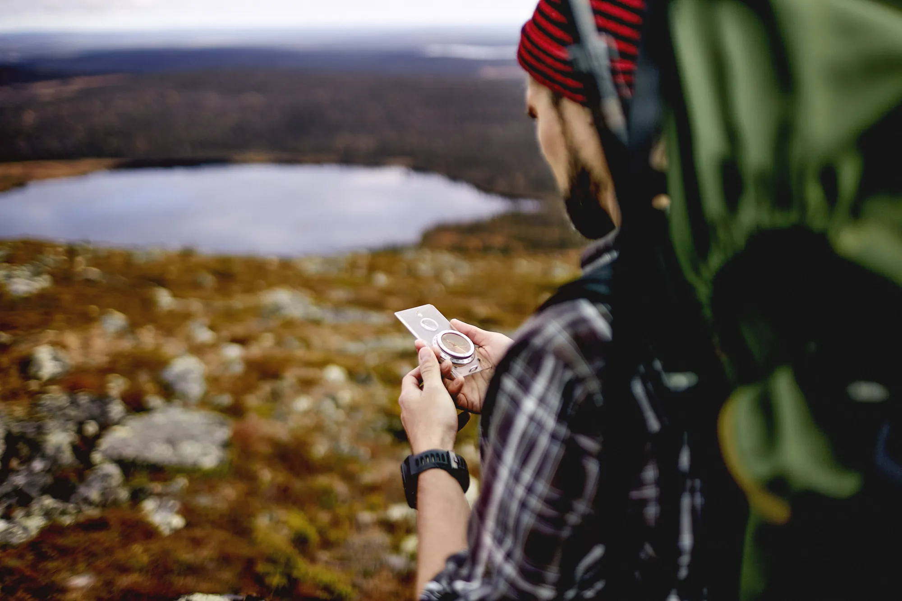

- Signal usually fades after the roadhead, so save everything the night before: an offline map, the day-by-day plan, permits and contacts.
- Keep your phone warm and in airplane mode, and carry a power bank and a printed itinerary.
- Use maps to understand the route, never to improvise; follow your guide and the marked trail.
On most Himalayan treks, mobile signal fades within a few hours of the roadhead. Even on short treks near cities, it comes and goes. You can't look things up on the trail, so everything you need has to be on your phone, in your bag or in your head before you start.
Here's a simple routine that works for any trek in India.
The night before: save these on your phone
- An offline map of the area. In Google Maps you can download an "offline area" around the trailhead and route. Apps built on OpenStreetMap, such as Organic Maps or OsmAnd, let you download whole regions and often show footpaths that road maps don't. Check before you go that your trail actually appears.
- The day-by-day plan. Screenshot the itinerary from the trek page: each day's start and end, distance, time and camp altitude. On Treqz that's the "Days" section under the 3D flythrough.
- Screenshots of the 3D route. A few frames from the flythrough, especially each camp and the hardest day, help you picture what's ahead. They're for orientation, not navigation.
- Peak names. The trek page lists the main peaks in view; it's satisfying to recognise them on the trail.
- Permits and contacts. Photos of your ID and permits, plus your operator's and emergency contacts.

In your bag
- A power bank and cable. Cold drains phone batteries fast. Keep the phone in an inner pocket close to your body, and use airplane mode when you're not taking photos.
- A printed copy of the itinerary. Paper doesn't run out of battery.
- A headlamp with spare batteries, for early summit starts and evenings in camp.
- Your ID and permits. Many treks pass forest or protected-area checkposts; the trek page's permits section lists what's needed where we found a source.
On the trail
- Follow your guide and the marked trail. No phone map replaces local knowledge, especially in snow or fog when the path is hidden.
- Use maps to understand, not to improvise. Leaving the trail to follow a line on a screen is how people get lost.
- Tell someone your plan: your trek, dates and expected return, before you lose signal.

Where Treqz fits, and where it doesn't
Treqz is for before the trek: choosing the right one, seeing the terrain, knowing each day's climb. On every trek page we say it plainly: the trail line is traced from elevation data, OpenStreetMap and campsite altitudes, so treat it as approximate, not as a navigation map. Read how our 3D maps are made to see why.
What it's great for is building a mental map. If you've flown the route before you start, you'll know roughly where the forest ends, which ridge is summit day and where camp is, and that makes the real trail far less confusing.
Quick checklist
- ☐ Offline map area downloaded and trail visible
- ☐ Itinerary screenshots + printed copy
- ☐ 3D route screenshots of each camp and summit day
- ☐ Power bank charged, cable packed
- ☐ ID, permits, emergency contacts
- ☐ Plan shared with family or a friend
Planning a short one first? Try Triund or Kalsubai, or browse all weekend treks.
Treqz is a free trek atlas: we don't sell treks or take bookings.
Quick questions
Which offline map app should I use?
Google Maps can save an "offline area". OpenStreetMap-based apps such as Organic Maps or OsmAnd download whole regions and often show footpaths. Check your trail actually appears before you leave.
Can I navigate with the Treqz 3D maps on the trail?
Not with the 3D atlas on this site: its trail lines are approximate and meant for planning. Use it to build a mental map, and follow your guide and the marked trail.
Why does my phone die faster on treks?
Cold reduces battery capacity. Keep the phone in an inner pocket close to your body, use airplane mode, and carry a power bank.